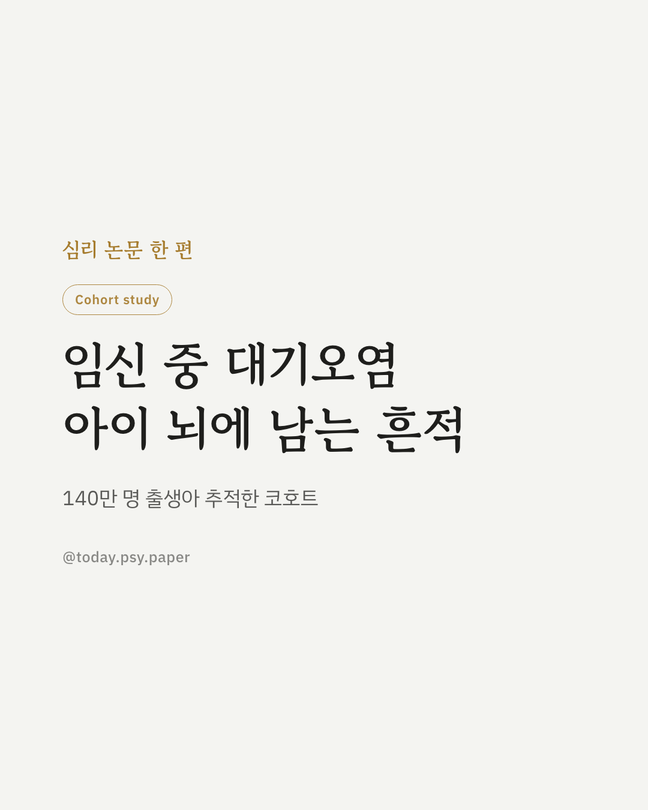
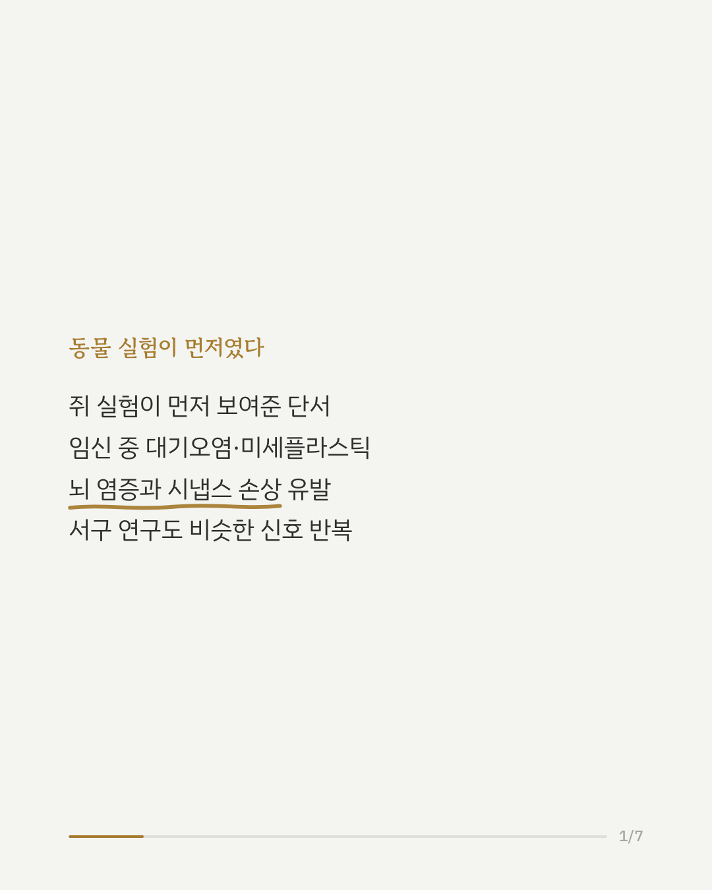
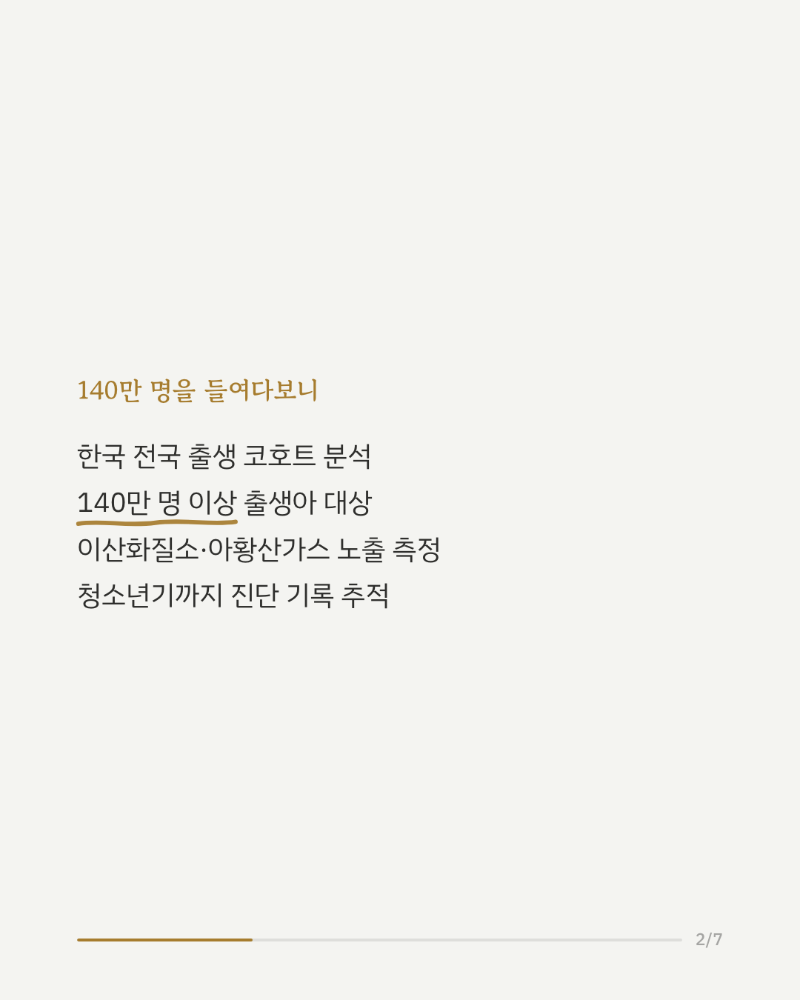
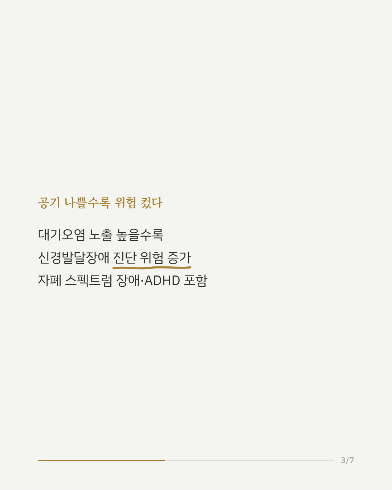
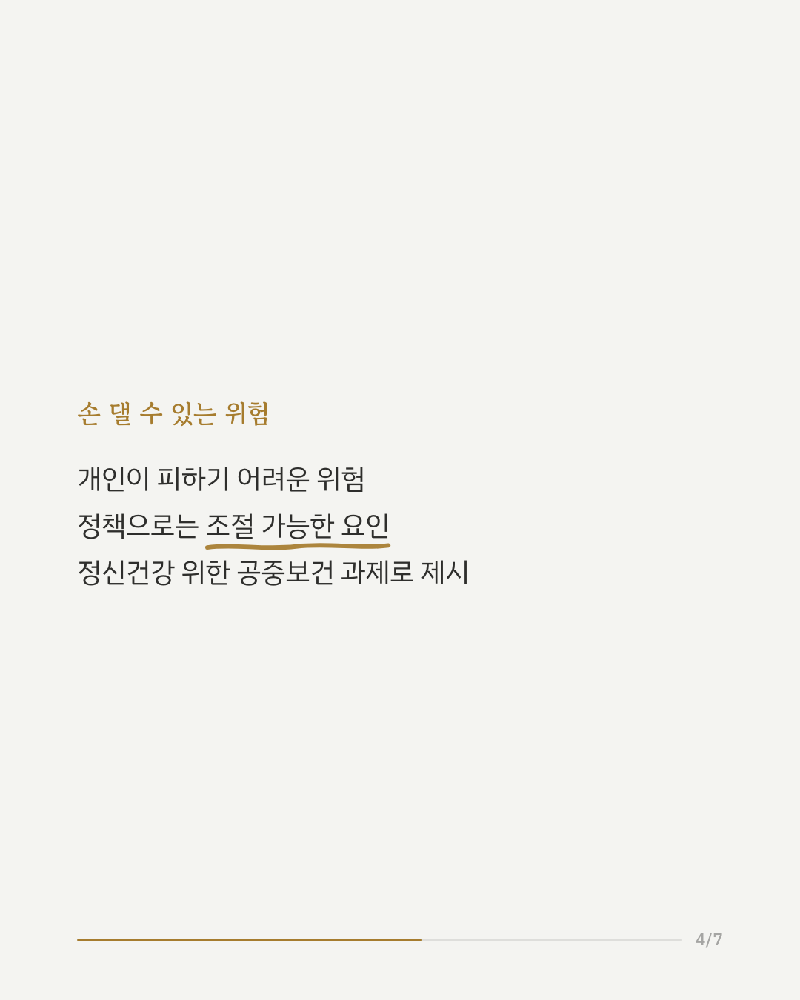
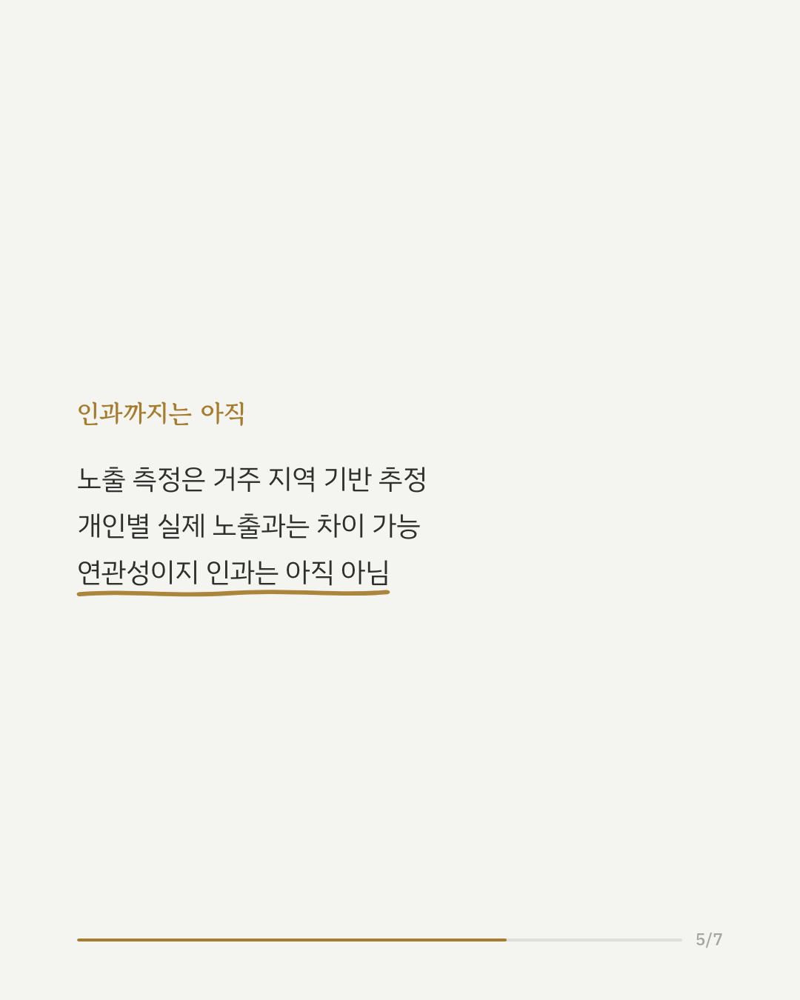
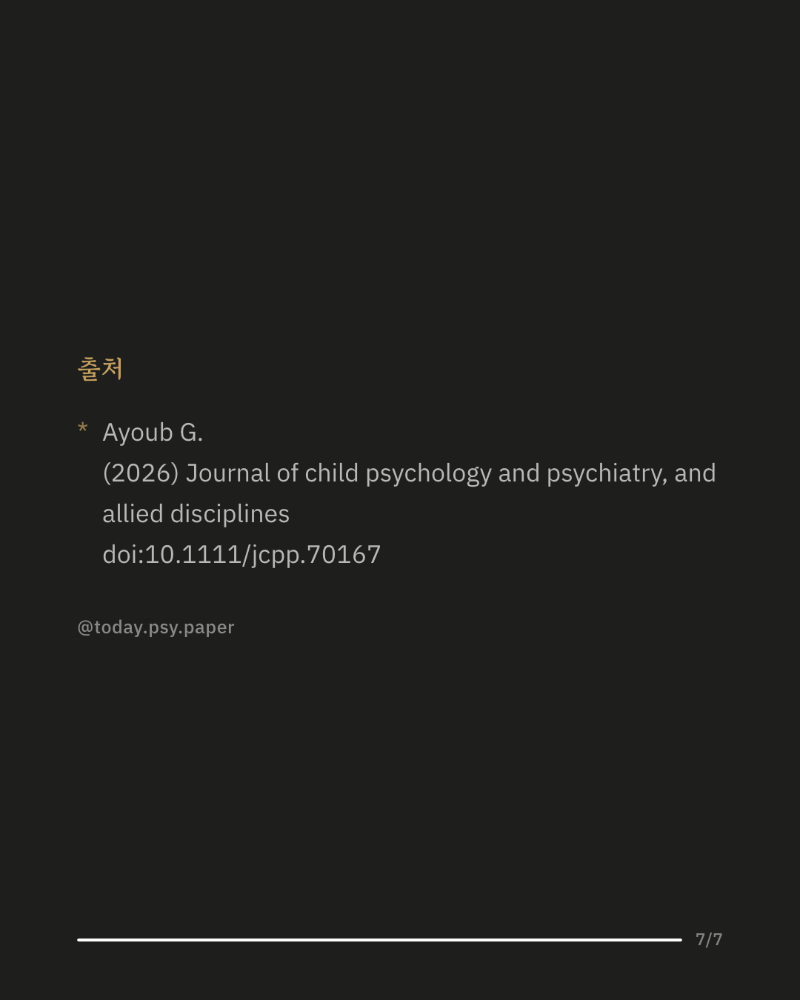

임신 중 마신 공기가 아이의 자폐 스펙트럼 장애나 ADHD 같은 신경발달장애 위험과 관련 있다는 연구 결과가 나왔습니다. 동물 실험에서는 임신 중 대기오염과 미세·나노플라스틱에 노출되면 태아의 뇌에 염증이 생기고 시냅스 형성이 흐트러지며, 자폐나 주의력 문제와 비슷한 행동이 관찰되었습니다. 이런 배경 위에서 한국의 전국 출생 코호트 연구는 2007년부터 2019년 사이 태어난 140만 명 이상의 데이터를 분석했습니다. 그 결과 임신 중 이산화질소와 아황산가스 노출 수준이 높을수록, 청소년기까지 신경발달장애로 진단받을 위험이 함께 높아지는 경향이 확인되었습니다. 이 연구는 대기오염을 개인이 통제하기는 어렵지만 정책으로는 조절할 수 있는 공중보건 요인으로 제시한다는 점에서 의미가 있습니다. 다만 이 논문은 원 연구가 아니라 이를 해설한 커멘터리이며, 대기오염 노출은 거주 지역 기반 추정치로 측정되어 개인의 실제 노출과는 차이가 있을 수 있습니다. 출처: Journal of Child Psychology and Psychiatry (2026), 'Prenatal exposure to ambient air pollution and risk of neurodevelopmental disorders in offspring: A nationwide population-based cohort study - A commentary on Oh and Song 2026' #신경발달장애 #임신중건강 #소아정신건강 #대기오염과건강 #자폐스펙트럼장애
python3 publish.py 42126059